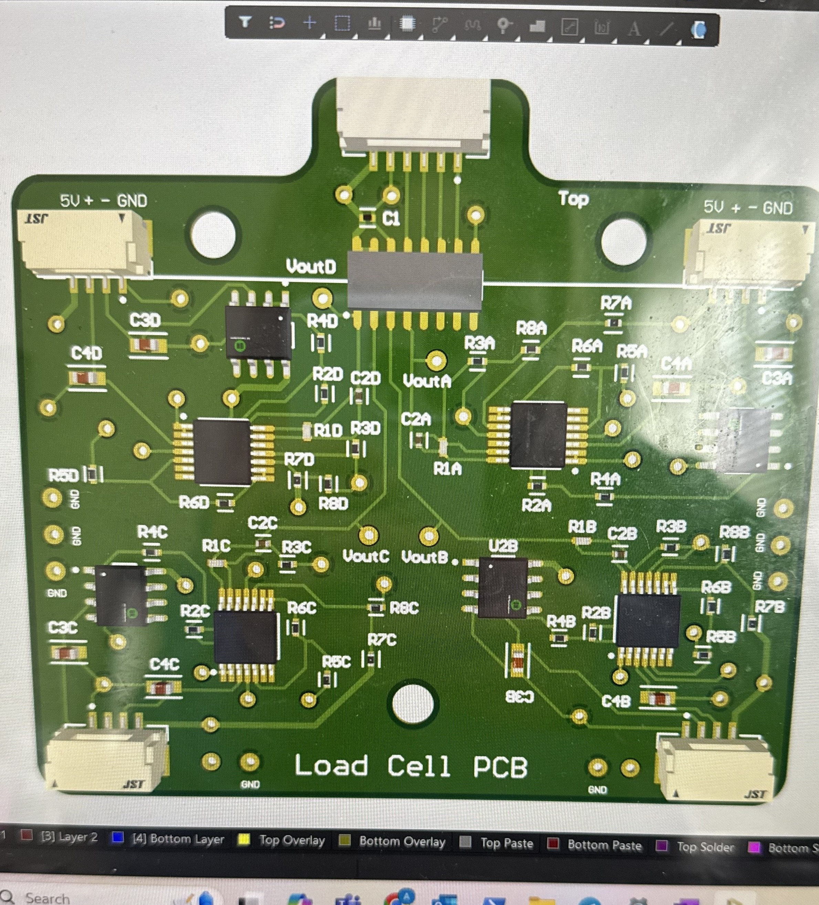
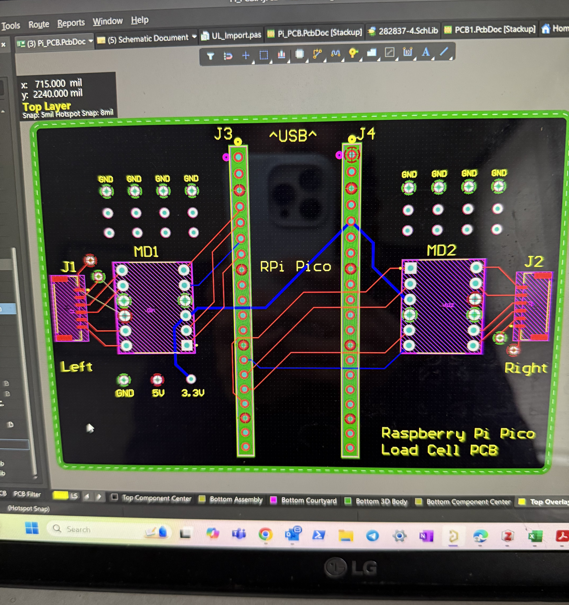

Design Project
Something I am very passionate about is my senior design project for Biomedical Engineering here at UW-Madison. My team and I are designing a force sensing system to mount onto the foot plates of a rowing machine so that a rower can see their force output in real-time. We are in the process of validating this device so that the UW rowing team can use it for training and biomedical research. As a bioinstrumentation-focused student, I designed the printed circuit boards for the signal processing of the force sensors.
Learn more about my BME design project here!

